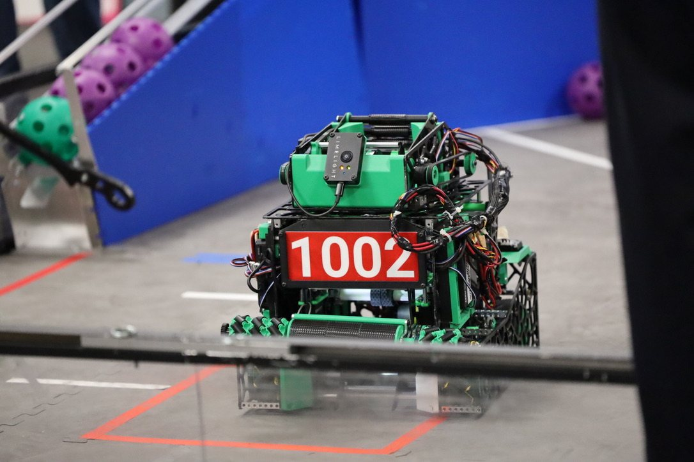

Design Portfolio
CAD Designs
Selected mechanical designs modeled in SOLIDWORKS.
Senior Capstone Abstract
The project developed and evaluated a lightweight, servo-actuated system for deploying a life jacket from a multirotor UAV. The design was iterated in SOLIDWORKS, tested with a payload and evaluated using finite element analysis. The final linkage-based latch successfully released the life jacket during flight testing.
Senior Capstone · 2025
Life Jacket Delivery System
Servo-actuated payload release designed to carry and deploy a life jacket from a multirotor UAV. The final mechanism was evaluated with FEA and successfully flight-tested.
Role: Individual, full design and testing
Tools: SOLIDWORKS, FEA

FTC 2024–25 · INTO THE DEEP
Chipi
Competition robot for FIRST Tech Challenge. I designed the claw end effector.
Tools: SOLIDWORKS


FTC 2023–24 · CENTERSTAGE
ZeroTolerance
Competition robot for FIRST Tech Challenge. I designed the drive base and chassis.
Tools: SOLIDWORKS